The narrative around battery energy storage system (BESS) fires has become distorted by a fundamental misunderstanding. When incidents make headlines—Moss Landing (2025), Victoria Big Battery (2021), Arizona Public Service (2019)—the assumption is that advanced lithium-ion cells are inherently dangerous and require ever-more sophisticated chemistry to manage thermal runaway.
The reality is starkly different: only 11% of BESS fire incidents originate from cell or module failures. The remaining 90% of failures stem from system-level deficiencies in design, assembly, controls, and operational procedures.
This distinction is not semantic. It fundamentally reframes how the industry should approach safety investments, how regulators should structure standards, and where manufacturers and developers must focus their engineering discipline. Understanding this distinction is critical for India's rapidly growing BESS market, where deployment is accelerating for renewable energy storage while commissioning expertise remains nascent.
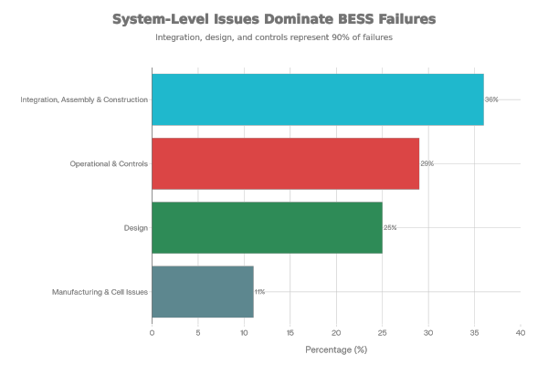
The Root Cause Paradox: Why Automation Matters
The explanation for BESS safety failures begins with an uncomfortable truth: the component receiving the most industry attention—the battery cell—is the component failing the least often. This paradox emerges from examining how each major manufacturing stage approaches quality control.
Cell Manufacturing: The Pinnacle of Automation
Modern lithium-ion cell manufacturing is among the most automated industrial processes in existence. A single GWh-scale cell production facility requires only 25 workers per GWh capacity. The entire process—from raw material handling through electrode coating, cell assembly, testing, and quality control—operates with minimal human intervention. Each production step is roboticized, monitored by automated systems, and validated by multiple inspection checkpoints including visual inspection, electrical testing, and statistical process control.
The result speaks for itself: cell manufacturers like CATL target defect rates of 1 part per billion (ppb), with actual performance reaching approximately 0.1 ppm—equivalent to 1 failure in every 10 to 40 million cells. To contextualize: this is roughly one failure every 116 days if producing continuously. This extraordinary reliability exists because the manufacturing environment is fully controlled, processes are standardized globally, and machinery is continuously optimized based on real-time production data.
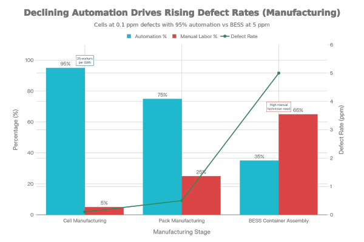
Pack Manufacturing: Partial Automation Creates Residual Risk
Battery packs represent the next level of assembly, where cells are combined with structural components, thermal management systems, electrical interconnects, and monitoring sensors. Pack manufacturing, particularly for EV and grid-scale applications, has achieved high automation through the use of industrial robots for laser welding, thermal material dispensing, and automated leak/insulation testing. These critical safety-relevant steps are performed by machines, not humans, dramatically reducing assembly error rates.
However, manual work persists in pack manufacturing—specifically in cabling, component placement in confined spaces, and final assembly operations that are difficult to fully automate. Even so, pack manufacturing occurs in controlled factory environments with comprehensive end-of-line testing that catches 95% of defects before shipment. The defect rate for pack assembly is estimated at 0.5 ppm, still exceptional but higher than cell manufacturing.
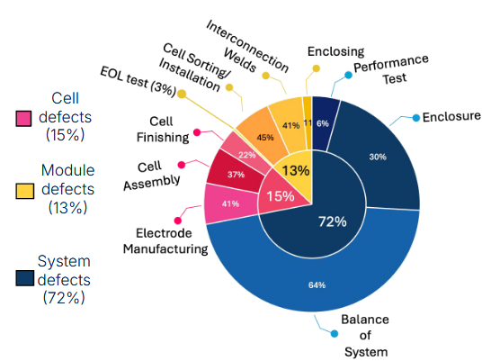
BESS Container Assembly: The Automation Cliff
Here is where the safety story changes dramatically. BESS container assembly—the final integration of battery packs, power conversion systems, thermal management systems, electrical infrastructure, and controls—occurs predominantly onsite, during commissioning, in the least controlled environments. This is the integration, assembly, and construction (IAC) phase, and it represents a fundamental departure from the factory environment.
Electrical connections linking modules in series/parallel configuration, busbar bolting and torquing, cable routing inside confined containers, BMS/EMS/PCS wiring harness installation, and final system checkout are performed manually by technicians. While leading OEMs like Tesla , Sungrow , and BYD pre-manufacture many integration steps in their factories, smaller OEMs and self-integrated asset owners continue to perform critical assembly onsite.
The data reveals the consequences: 72% of BESS quality issues emerge during the IAC phase, exactly where manual labor dominates. And it is during this phase that the majority of field failures occur: 72% of all documented incidents take place during construction, commissioning, or within the first two years of operation.
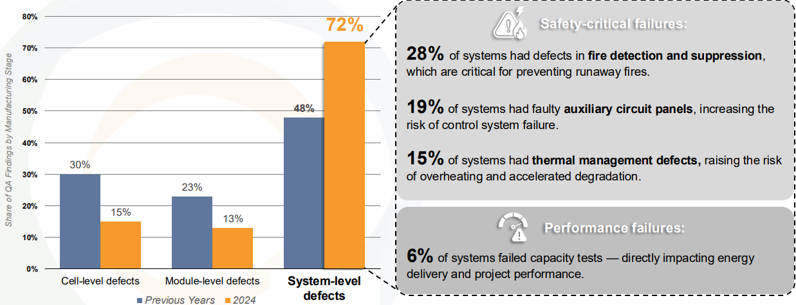
Why Control Systems Fail: A Multi-Vendor Integration Crisis
The second largest category of BESS failures—accounting for 43% of incidents—involves control systems: the Battery Management System (BMS), Energy Management System (EMS), and Power Control System (PCS). These components frequently come from different vendors, designed to different specifications, communicating over incompatible protocols, and integrated by teams under schedule pressure during commissioning.
The South Korea battery fires of 2018–2019 exemplify this failure mode with brutal clarity. Authorities identified defects in certain cells sourced for Korean BESS installations. In response, they issued operational guidance: reduce maximum state of charge (SoC) to 70% to prevent thermal runaway in affected cells. The instruction was clear. The system's response was inadequate.
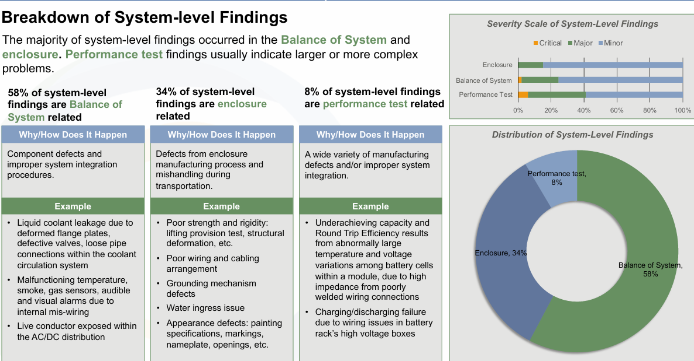
Investigations revealed that the manufacturers of the EMS (Energy Management System), PMS (Power Management System), and BMS (Battery Management System) were different companies. These systems used incompatible time protocols for communication. As a result, the EMS could not reliably enforce the 70% SoC limit across the distributed BMS units. Some cells continued operating above 70% SoC despite the operational constraint. The outcome: additional fires caused not by defective cells, but by a control system that failed to execute the operational directive designed to prevent cell failure.
This is the core vulnerability of multi-vendor BESS systems: each component is sound in isolation, but their integration creates failure modes that no individual component can prevent. A faulty sensor might not trigger proper escalation. A firmware update might corrupt communication between systems. An alarm condition might be detected but not communicated to the operator. The system fails to act as an integrated whole.
Balance-of-Plant Component Failures: The Hidden Majority
Balance-of-Plant (BOP) components—cooling systems, electrical infrastructure, fire suppression systems, ventilation, and structural elements—account for 46% of BESS failures. These failures are not inherent to the component design but emerge from integration deficiencies during assembly and commissioning.
The Victoria Big Battery incident in Australia (2021) exemplifies this category. During commissioning, the liquid cooling system developed a leak. This leak led to arcing between battery modules, initiating thermal runaway in adjacent cells. The fire was classified as resulting from "component failure," but the root cause was assembly quality during commissioning.
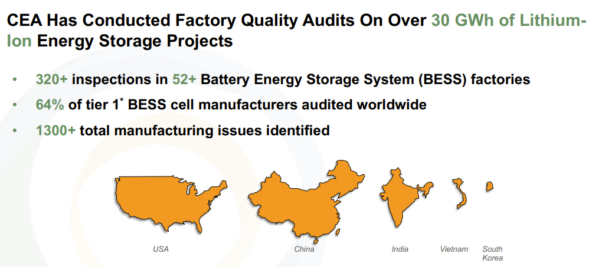
Similarly, inspection data from the Clean Energy Association (CEA) found that 64% of identified quality issues during factory acceptance testing (FAT) involved BOP components, and system-level issues overall accounted for 72% of all quality defects, while cell and module level issues combined represented only 28%.
These are preventable failures. They result from:
- Poor coolant system sealing during assembly: Water intrusion or refrigerant leaks in thermal management systems
- Inadequate ventilation design or installation: Ventilation blockages during construction that prevent thermal dissipation
- Defective fire suppression systems: Pressure release vents not functioning, suppression agents improperly charged, or detection systems failing to trigger
- Electrical infrastructure defects: Undersized wiring for expected current loads, loose connections at busbar interfaces, improper grounding
- Communication interface failures: Inadequate isolation between control signal voltages and power circuits, leading to noise and misinterpretation
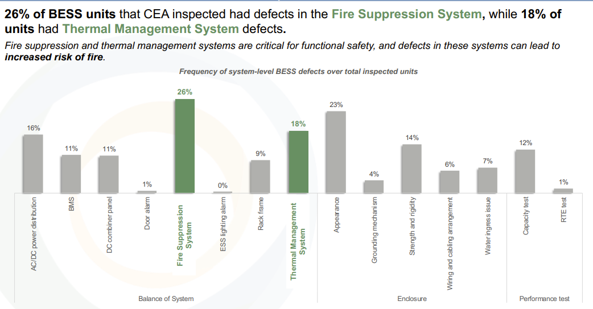
The Timeline Reveals the Vulnerability Window
A critical pattern emerges from global incident data: nearly half of all reported BESS fires (51%) occurred within the first six months of operation. Furthermore, 72% of all incidents occur during construction, commissioning, or within the first two years. By the time a system reaches five years of reliable operation, most latent defects have emerged and been corrected.
This timeline is diagnostic. It points directly to integration and early-stage design failures that surface only when multiple sub-systems must operate together in real-world conditions for the first time. Thermal management systems are pushed to their limits during hot commissioning. Communication protocols are tested under actual operating conditions. Edge cases in control logic emerge as real power flows occur.
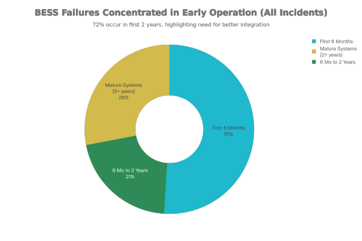
Commissioning itself introduces three persistent risk factors:
- Multi-vendor communication failures: Devices from different suppliers exhibiting unexpected interactions when integrated, causing control delays or incorrect sequencing
- Firmware update instability: Configuration changes during commissioning that inadvertently disable previously functioning safety interlocks
- Schedule pressure: Costly commissioning delays create pressure to deploy systems before full validation is complete, with critical spare parts often requiring special procurement that extends timelines further
The Economic Imperative: Safety and Profitability Align
The narrative of "solving the cell problem" suggests a choice: prioritize safety or accept lower costs. The actual data suggests the opposite alignment. Solving system-level integration and control challenges simultaneously improves both safety and financial performance.
Integration discipline directly enhances operational availability. Better control system coordination ensures that full power and energy ratings are actually dispatchable, not reduced by conservative operational limits imposed to avoid thermal runaway. Improved thermal management reduces forced deratings during peak periods. Fewer thermal management defects mean fewer shutdowns and higher capacity factors.
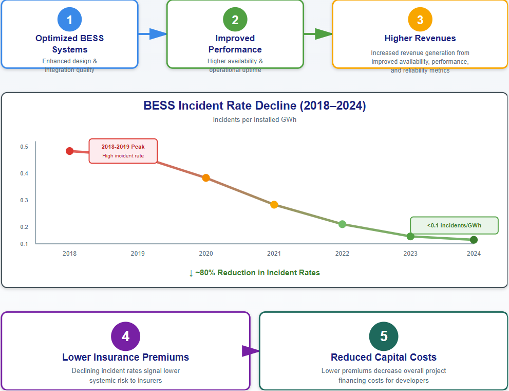
The economic benefit flows through the value chain: optimized BESS systems generate higher revenues from improved availability and performance. As incident rates continue declining—from the 2018–2019 peak to below 0.1 incidents per installed GWh in 2024—insurance premiums will reflect lower systemic risk, reducing capital costs for developers.
For India's emerging BESS ecosystem, this alignment is crucial. Market growth depends on investor confidence, which depends on safety validation. The fastest path to scaling safe, profitable BESS deployment is engineering discipline in integration and commissioning—not waiting for incremental improvements to cell chemistry.
Strategic Implications: The AC/DC Block Revolution
The industry is responding to these data through product standardization. Leading manufacturers are shifting toward pre-integrated "AC blocks" (fully finished systems including power conversion) and "DC blocks" (pre-integrated battery subsystems with thermal management), manufactured and tested in factory environments rather than assembled onsite.
This shift directly addresses the root cause of 72% of BESS quality issues. By moving integration work from error-prone onsite environments into controlled factories, defect rates decline and safety improves. Firms investing in factory automation and standardized product architectures will capture market share; OEMs focused on site-specific customization will remain niche.
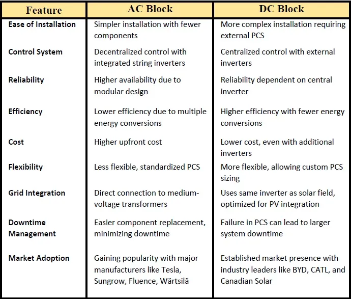
For asset owners considering BESS procurement, this trend is essential. Systems leveraging AC/DC block architectures have inherently lower commissioning risk, as fewer onsite integration steps are required. The degree to which a supplier standardizes its products directly correlates with safety performance.
Actionable Framework for Market Participants
The evidence points to specific priorities for each stakeholder:
Asset Owners (Procurement)
- Prioritize cell quality, but recognize this is table stakes, not the differentiator
- Insist on standardized AC/DC block architectures; avoid highly customized systems
- Require Factory Acceptance Testing (FAT) and Site Acceptance Testing (SAT) with detailed commissioning protocols
- Demand access to operational data post-deployment: HVAC temperatures and flows, PCS voltages/currents, BMS cell voltages and temperatures, insulation resistance
- Implement continuous monitoring and anomaly detection in the first two years when latent defects emerge
System Integrators
- Embed factory integration of critical components; minimize onsite assembly work
- Implement comprehensive multi-vendor communication testing before deployment
- Establish transparent commissioning protocols with clear acceptance criteria
- Provide detailed as-built documentation and control system configuration records
- Maintain post-commissioning support through the critical first two years
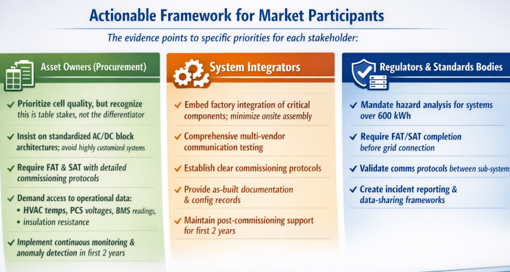
Regulators and Standards Bodies
- Mandate hazard mitigation analysis for systems exceeding 600 kWh capacity
- Establish minimum requirements for FAT/SAT completion before grid connection
- Require communication protocol validation between vendor-supplied sub-systems
- Create incident reporting and data-sharing frameworks to accelerate industry learning
India's Opportunity: Building the Right Foundation
For Semco Infratech and India's broader BESS ecosystem, the global evidence offers a clear roadmap. As the country accelerates renewable energy deployment and BESS capacity grows exponentially, the industry has an opportunity to embed system-level safety discipline from inception rather than discovering gaps through preventable incidents.
The path forward requires three commitments:
Localized EPC expertise in system integration rather than importing turnkey solutions dependent on overseas commissioning teams. India should develop indigenous capability focused on multi-vendor component coordination, FAT/SAT protocols, and commissioning validation. This expertise directly addresses the 72% of failures occurring in the IAC phase.
Harmonization of safety standards with global best practices, embedding NFPA 855, IFC 1207, and equivalent requirements into Indian regulatory frameworks. Any BESS exceeding 600 kWh should require hazard mitigation analysis and certified testing—not as optional best practice, but as minimum deployment requirement.
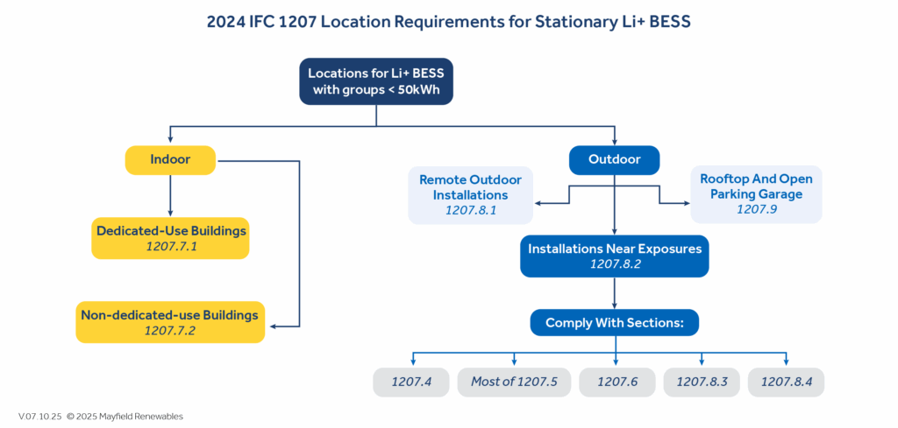
Transparency and data sharing on commissioning outcomes across the Indian ecosystem. The global industry has learned what it knows about BESS safety through post-incident forensics. India can accelerate its learning curve by establishing data-sharing frameworks for commissioning timelines, defect rates, and failure modes—normalizing best practices across the market before incidents occur.
Conclusion
The continued framing of BESS safety as a cell problem has become an obstacle to progress. It directs investment toward marginal improvements in cell chemistry—where defect rates already reach 0.1 ppm—while ignoring the systematic failures in balance-of-plant design, integration discipline, commissioning procedures, and control system coordination that cause nine out of ten incidents.
The evidence is unambiguous: 89% of BESS incidents stem from system-level factors, not cell defects. The incidents concentrate in the integration, assembly, and construction phase—exactly where manual labor is most prevalent, and manufacturing control is least rigorous. The timeline patterns reveal that most failures are preventable through disciplined integration and early monitoring, not through incremental cell improvements.